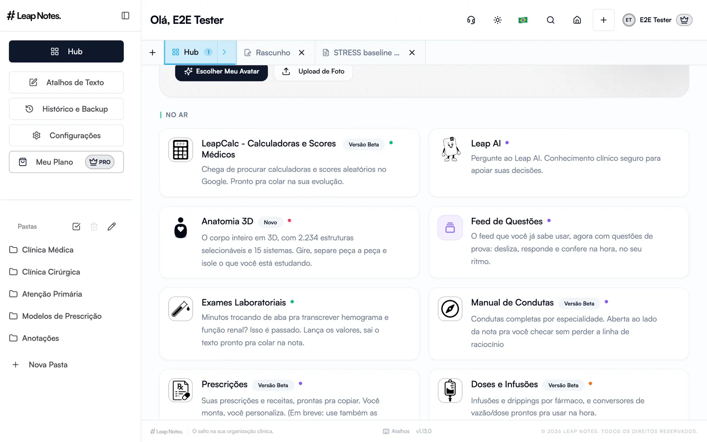
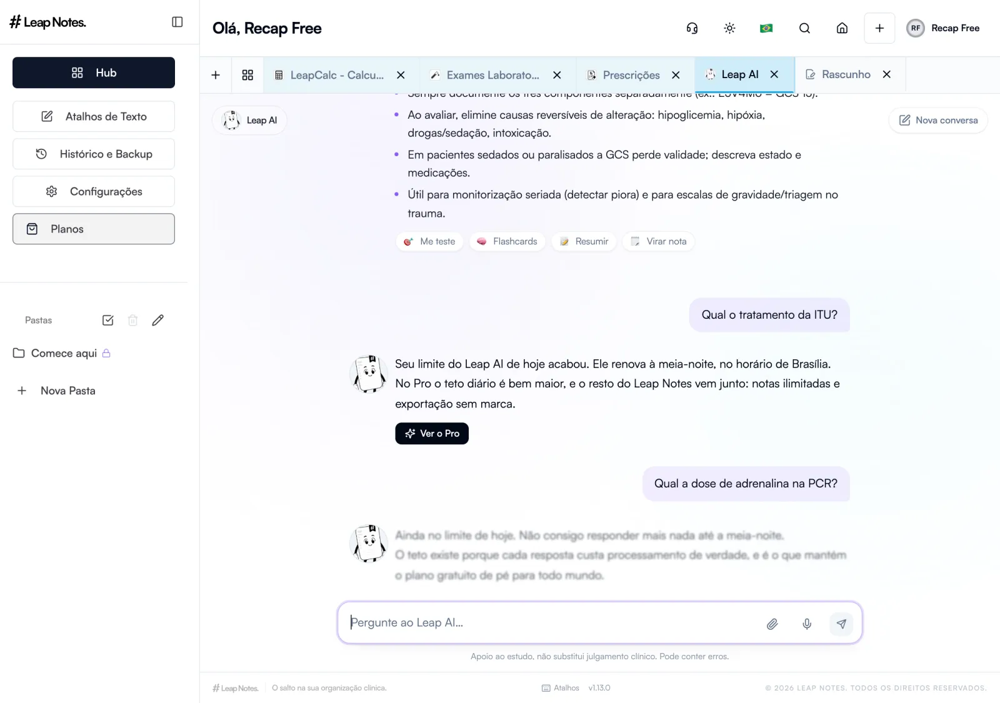
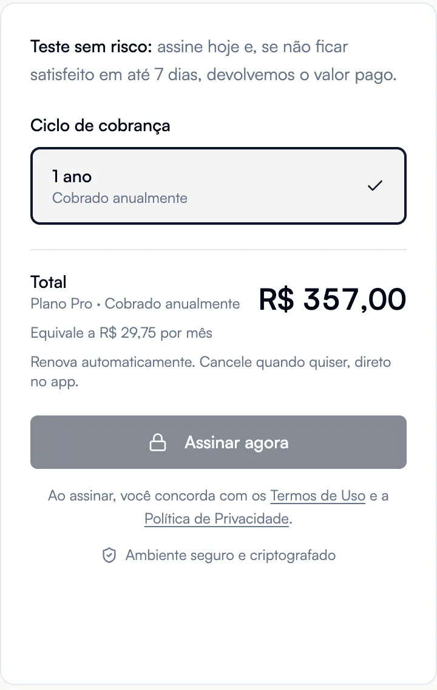

Neste artigo
A mensagem de suporte que mais me preocupa não é "tá dando erro". É "paguei e não liberou". Erro de tela a pessoa contorna, espera, tenta de novo. Dinheiro que saiu da conta sem o acesso chegar quebra a confiança na hora, e confiança é o que faz alguém deixar as anotações de plantão dentro de um app.
O que aparece nos vídeos do Leap Notes é a anatomia 3D, o Leap AI, o editor. Mas depois que o produto saiu do bloco de notas e passou a ter plano grátis, plano pago, app no celular e milhares de pessoas usando, a maior parte das minhas decisões como CTO virou a parte que não dá print. Separei as que mais pesam.
Confiança é a feature que ninguém pede
Ninguém abre o suporte pra elogiar que a nota estava lá no dia seguinte. Mas é exatamente isso que segura o usuário. Médico escreve no plantão, com pressa, às vezes sem internet boa. Se ele perde uma evolução uma vez, não volta.
Por isso, antes de qualquer feature nova, a pergunta que eu faço é se ela pode, de algum jeito, fazer alguém perder o que escreveu ou ver uma versão velha do app. Histórico de versões e backup ficam no menu principal, à vista, e não escondidos em configuração. E todo deploy que o usuário percebe atualiza o número da versão e as notas da versão no rodapé. Parece burocracia até o dia em que alguém manda print de um comportamento estranho e você precisa saber qual versão está rodando ali.

Suporte é onde o produto fala a verdade
Eu leio o suporte. Não tudo, mas o suficiente pra perceber quando a mesma dúvida aparece três vezes na semana. Pergunta repetida quase sempre é defeito de produto disfarçado: um botão que ninguém acha, um texto que promete uma coisa e entrega outra, um limite que não se explica.
O limite do Leap AI é um bom exemplo. Cada resposta custa processamento de verdade, então o plano gratuito tem um teto diário. Dava pra responder só "limite atingido". A mensagem diz quando renova, o que muda no Pro e por que o teto existe. A regra é a mesma, só que explicada, e isso muda o tom de quem escreve pro suporte depois.

Pagamento que simplesmente funciona
O Leap tem checkout próprio, com cartão, Pix e assinatura. Isso dá controle sobre a experiência, mas também coloca na nossa mão tudo que pode dar errado entre o clique em "assinar" e o acesso liberado.
Os princípios que segui ali são poucos. Quem paga nunca perde acesso por erro nosso, então ninguém é rebaixado sem a gente ter certeza de que foi a assinatura certa que acabou. Cancelar é direto no app, sem precisar pedir. O reembolso em sete dias está escrito na tela de pagamento, não escondido nos termos. E existe um aviso automático pra quando alguém pagou e o acesso não foi ativado, porque gateway conversa com o sistema por eventos, e evento chega atrasado, repetido ou fora de ordem.

Decidir o que não fazer
Com time enxuto, o "não" é a ferramenta de gestão mais usada. Não à ideia boa que destrava menos gente do que outra que já está na fila. Não à feature que agrada um usuário barulhento e confunde os outros cem. Não a deixar um custo variável sem teto: no assistente, se a checagem de uso falhar por qualquer motivo, ele prefere recusar a liberar. Prefiro um usuário reclamando de bloqueio indevido a uma conta de IA crescendo sem ninguém ver.
Teve decisão de produto que pareceu exagero e não era. Funcionalidade nova que mexe no editor só chega a quem já atualizou o app, porque versão antiga convivendo com dado novo é receita pra perder texto.
Cadência com time enxuto
Nossa cadência é de entregas pequenas e frequentes. Tudo passa por um ambiente de desenvolvimento antes de produção, com teste automatizado e alguém usando de verdade. Nada vai pro ar sem revisão de outra pessoa do time. Mudança grande vira várias pequenas, que dá pra lançar e observar separadas.
Isso deixa o time rápido sem virar roleta. Num dia bom, várias melhorias chegam em produção numa tarde. Num dia ruim, uma delas volta e as outras seguem.
Medir antes de mexer
Quase todo redesign que eu já quis fazer começou com uma opinião. Os que deram certo começaram com um número. Antes de mexer no onboarding ou no checkout, a gente mede onde as pessoas param. E antes de confiar num número, conferimos se ele é estável: um indicador que muda o passado conforme os dados de hoje mudam não serve pra decidir nada.
Os sócios acompanham isso num painel feito pra eles, em linguagem de gestor, com o que importa logo na primeira tela. Meu trabalho é garantir que o que está ali seja verdade. Time pequeno não tem equipe de plataforma pra cuidar de nada disso. Ou o CTO cuida, ou ninguém cuida, e o produto continua bonito por fora até o dia em que alguém que paga perde o acesso.

Full stack de Fortaleza. Ciência da Computação na UECE, cofundador e CTO do Leap Notes, tech lead do Portal da História do Ceará.